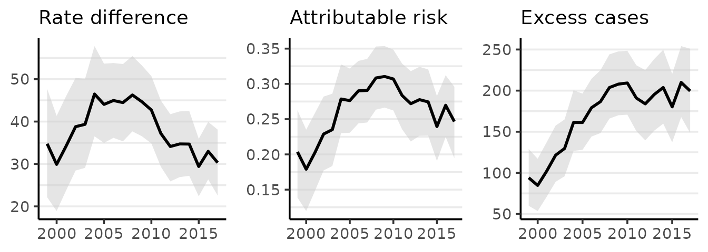
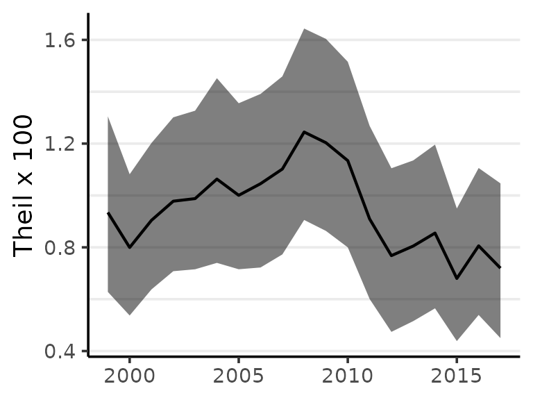

surveil provides a number of functions and methods for measuring health differences or inequalities. These can calculated using the group_diff function.
Pairwise measures of inequality have an important purpose (tracking health inequalities between historically or currently advantaged and disadvantaged groups), but we should keep in mind the limitations inherent in tracking the progress of any group by comparing that group to a moving target (particularly one that may move in an unfavorable direction).
The group_diff function returns estimates for the following quantities, where \(A\) is the incidence rate for the advantaged group, \(D\) is the incidence rate of the disadvantaged group, and \(P_d\) is the size of the population at risk for the disadvantaged group.
Table 1: Group difference measures for age-stratified groups.
| Concept | Formula |
|---|---|
| Rate Ratio (RR) | \(\frac{D}{A}\) |
| Rate Difference (RD) | \(D - A\) |
| Excess Cases (EC) | \((D-A) \times P_d\) |
| Proportion Attributable Risk (PAR) | \(\frac{D-A}{D}\) |
Notice that the PAR is simply the rate difference expressed as a fraction of total risk; it indicates the fraction of risk in the target population that would have been removed had the target rate been equal to the reference rate (Menvielle, Kulhánová, and Machenbach 2019).
We will illustrate using the colorectal cancer data from Texas MSAs aggregated by race-ethnicity:
library(surveil)
data(msa)
msa2 <- aggregate(cbind(Count, Population) ~ Year + Race, data = msa, FUN = sum)
head(msa2)
#> Year Race Count Population
#> 1 1999 Black or African American 471 270430
#> 2 2000 Black or African American 455 283280
#> 3 2001 Black or African American 505 298287
#> 4 2002 Black or African American 539 313133
#> 5 2003 Black or African American 546 329481
#> 6 2004 Black or African American 602 346886This fits the time trend models to each group:
# refresh = 0 will silence some printing
fit <- stan_rw(msa2, time = Year, group = Race, iter = 1e3, refresh = 0)
#> Distribution: normal
#> Distribution: normal
#> [1] "Setting normal prior(s) for eta_1: "
#> location scale
#> -6 5
#> [1] "\nSetting half-normal prior for sigma: "
#> location scale
#> 0 1To calculate the pairwise difference or inequality measures for two groups in our data, we call group_diff on our fitted model.
We have to name which group is the reference and which is the target group. The group names must match the labels in the data:
unique(msa2$Race)
#> [1] "Black or African American" "Hispanic"
#> [3] "White"In this case, we will use whites as the reference rate and African Americans as the target rate:
gd <- group_diff(fit, target = "Black or African American", reference = "White")
print(gd, scale = 100e3)
#> Summary of Pairwise Inequality
#> Target group: Black or African American
#> Reference group: White
#> Time periods observed: 19
#> Rate scale: per 100,000
#> Cumulative excess cases (EC): 3,205 [2979, 3433]
#> Cumulative EC as a fraction of group risk (PAR): 0.27 [0.25, 0.28]
#> time Rate RD PAR RR EC
#> 1999 170 35 0.20 1.3 94
#> 2000 166 30 0.18 1.2 85
#> 2001 168 34 0.20 1.3 102
#> 2002 169 39 0.23 1.3 121
#> 2003 167 39 0.24 1.3 130
#> 2004 167 46 0.28 1.4 161
#> 2005 159 44 0.28 1.4 161
#> 2006 155 45 0.29 1.4 179
#> 2007 153 44 0.29 1.4 187
#> 2008 150 46 0.31 1.4 204
#> 2009 144 45 0.31 1.5 208
#> 2010 139 43 0.31 1.4 209
#> 2011 131 37 0.28 1.4 191
#> 2012 125 34 0.27 1.4 184
#> 2013 125 35 0.28 1.4 195
#> 2014 126 35 0.27 1.4 204
#> 2015 123 29 0.24 1.3 180
#> 2016 122 33 0.27 1.4 210
#> 2017 123 30 0.25 1.3 200All of the surveil plotting and printing methods provide an option to scale rates by a custom value. By setting scale = 100e3 (100,000), the RD is printed as cases per 100,000. None of the other inequality measures (PAR, RR, EC) are impacted by this choice.
The plot method for surveil_diff produces one time series ggplot each for RD, PAR, and EC. The estimates for each measure are plotted as lines, while the shading indicates a 95% credible interval:
plot(gd, scale = 100e3)
#> Rate differences (RD) are per 100,000 at risk
(The estimates are the means of the posterior probability distributions for each quantity of interest.) If we wanted to replace the plot of the PAR with one of the rate ratio we would set the PAR option to FALSE, as in:
# figure not shown
plot(gd, scale = 100e3, PAR = FALSE)The group_diff function can be used to obtain measures of inequality between groups with age-standardized rates. The measures of excess cases (EC) and proportion attributable risk (PAR) are adjusted to account for age-specific rates and varying sizes of populations at risk.
In the following table, \(D\) and \(A\) refer to the age-standardized rates for the disadvantaged and advantaged populations, respectively. Age groups are indexed by \(i\), such that \(D_i\) is the incidence rate in the \(i^{th}\) age group for the disadvantaged population.
Table 2: Group difference measures for age-stratified groups.
| Concept | Formula |
|---|---|
| Rate Ratio (RR) | \(\frac{D}{A}\) |
| Rate Difference (RD) | \(D - A\) |
| Excess Cases (EC) | \(\sum_i (D_i - A_i) * P_{d,i}\) |
| Proportion Attributable Risk (PAR) | \(\frac{\sum_i (D_i - A_i) * P_{d,i}}{ \sum_i D_i * P_{d,i} }\) |
The EC measure sums the excess cases across all age groups, and the PAR divides the EC measure by the total risk across all age groups in the disadvantaged population. For age stratified populations, the PAR may be preferred over the RR as a measure of relative inequality because the PAR reflects the actual population sizes.
To compare two age-stratified population segments, you will first obtain age-standardized rates for each group separately. (See the vignette on age-standardization using vignette("age-standardization").) When fitting these models, be sure to use the same MCMC parameters each time: the number of MCMC iterations and chains must match (that is, use the same iter and chains values for each model).
For any two groups A and B, you might name these age-standardized models fit_a and fit__b. Next, combine them into a list. The first item in the list (A) will be used as the target group and the second (B) will be treated as the reference group:
fit_list <- list(group_a = fit_sr_a, group_b = fit_sr_b)Then pass that list to group_diff:
diff <- group_diff(fit_list)This will compare group A to group B.
Pairwise cannot provide a summary of dispersion or inequality across multiple groups. Theil’s T is an entropy-based inequality index with many favorable qualities, including that it naturally accommodates complex (nested) grouping structures (Theil 1972; Conceição and Galbraith 2000; Conceição and Ferreira 2000).
Theil’s T measures the extent to which groups are under- or over-burdened by disease, meaning simply that the proportion of cases accounted for by a particular group, \(\omega_j\), is lower or higher than the proportion of the population constituted by that same group, \(\eta_j\). With \(k\) groups, Theil’s index is \[T = \sum_{j=1}^k \omega_j \big[ log(\omega_j / \eta_j) \big].\] This is zero when case shares equal population shares and it increases monotonically as the two diverge for any group. Theil’s T is thus a weighted mean of log-ratios of case shares to population shares, where each log-ratio (which we may describe as a raw inequality score) is weighted by its share of total cases.
Theil’s T can be computed from a fitted surveil model, the only requirement is that the model includes multiple groups (through the group argument):
Ts <- theil(fit)
print(Ts)
#> Summary of Theil's Inequality Index
#> Groups:
#> Time periods observed: 19
#> Theil's T (times 100) with 95% credible intervals
#> time Theil .lower .upper
#> 1999 0.935 0.628 1.31
#> 2000 0.799 0.537 1.08
#> 2001 0.904 0.638 1.20
#> 2002 0.978 0.708 1.30
#> 2003 0.988 0.715 1.33
#> 2004 1.063 0.740 1.45
#> 2005 1.001 0.715 1.36
#> 2006 1.045 0.722 1.39
#> 2007 1.102 0.773 1.46
#> 2008 1.245 0.906 1.64
#> 2009 1.203 0.863 1.60
#> 2010 1.134 0.800 1.52
#> 2011 0.910 0.601 1.27
#> 2012 0.768 0.474 1.10
#> 2013 0.805 0.515 1.14
#> 2014 0.855 0.565 1.20
#> 2015 0.680 0.438 0.95
#> 2016 0.806 0.539 1.11
#> 2017 0.720 0.450 1.05The results can be visualized using plot:
plot(Ts)
While the minimum of Theil’s index is always zero, the maximum value varies with the structure of the population under observation. The index is useful for comparisons such as monitoring change over time, and should generally not be used as a indication of the absolute level of inequality.
The index also can be extended for groups nested in regions such as racial-ethnic groups within states. Theil’s index can provide a measure of geographic inequality across states (between-state inequality), and social inequality within states (within-state inequality) (Conceição, Galbraith, and Bradford 2001). For details, see ?theil.
Conceição, Pedro, and Pedro Ferreira. 2000. “The Young Person’s Guide to the Theil Index: Suggesting Intuitive Interpretations and Exploring Analytical Applications.” University of Texas Inequality Project (UTIP). https://utip.gov.utexas.edu/papers.html.
Conceição, Pedro, and James K. Galbraith. 2000. “Constructing Long and Dense Time Series of Inequality Using the Theil Index.” Eastern Economic Journal 26 (1): 61–74.
Conceição, Pedro, James K Galbraith, and Peter Bradford. 2001. “The Theil Index in Sequences of Nested and Hierarchic Grouping Structures: Implications for the Measurement of Inequality Through Time, with Data Aggregated at Different Levels of Industrial Classification.” Eastern Economic Journal 27 (4): 491–514.
Menvielle, Gwenn, Kulhánová, and Johan P. Machenbach. 2019. “Assessing the Impact of a Public Health Intervention to Reduce Social Inequalities in Cancer.” In Reducing Social Inequalities in Cancer: Evidence and Priorities for Research, edited by Salvatore Vaccarella, Joannie Lortet-Tieulent, Rodolfo Saracci, David I. Conway, Kurt Straif, and Christopher P. Wild, 185–92. Geneva, Switzerland: WHO Press.
Theil, Henry. 1972. Statistical Decomposition Analysis. Amsterdam, The Netherlands; London, UK: North-Holland Publishing Company.